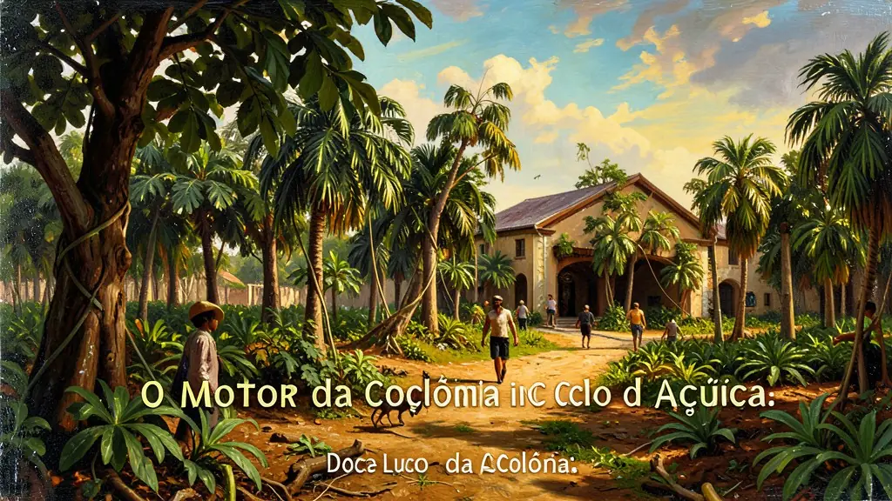
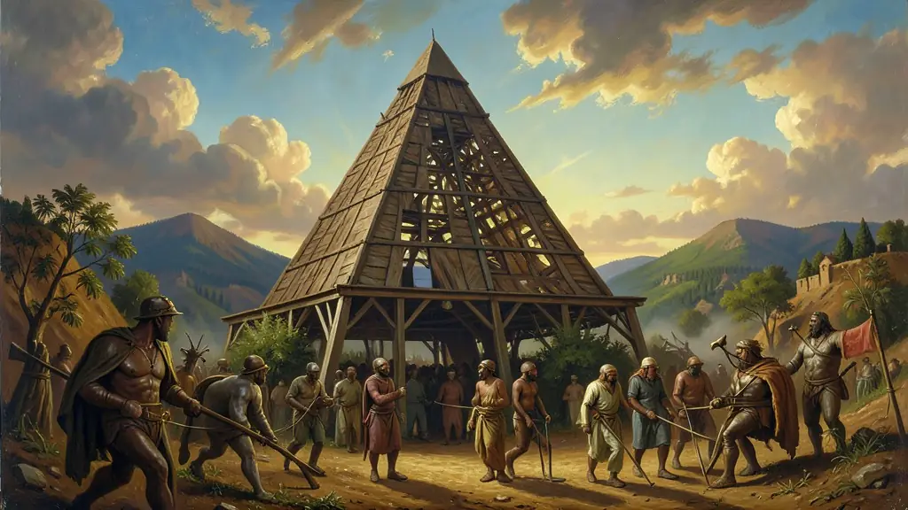
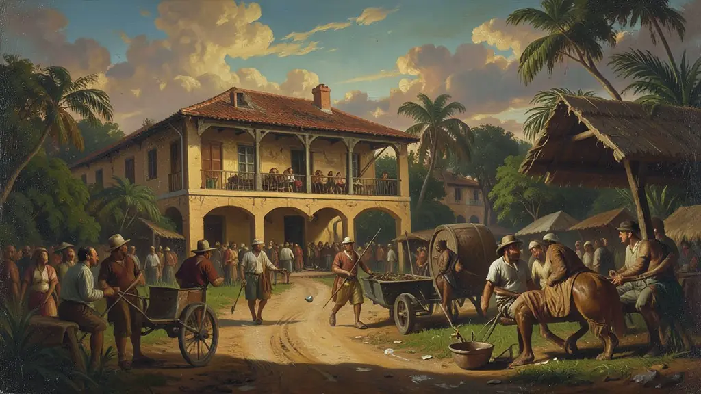

Capítulo 01
1. Plantation: O Motor da Colônia
O açúcar não era apenas uma planta; era uma fábrica. No Engenho, tudo era projetado para o lucro rápido. O latifúndio impedia que o povo tivesse terra para plantar comida, obrigando o Brasil a importar quase tudo. A monocultura esgotava o solo e a escravidão esgotava a alma humana. Esse modelo de 'grande fazenda de exportação' é o DNA que ainda define muito do agronegócio brasileiro contemporâneo.

Capítulo 02
2. Senhores e Escravos: A Pirâmide de Ferro
No topo, o Senhor de Engenho; no meio, uma pequena classe de homens livres (padres, feitores, artesãos); na base, a massa de escravizados. A Casa-Grande e a Senzala não eram apenas edifícios, mas símbolos de uma distância social intransponível. A mulher era submissa ao pai ou ao marido, e a honra da elite era medida pela quantidade de braços negros que possuía para moer a cana.

Capítulo 03
3. Nassau em Pernambuco: O 'Oásis' Holandês
Maurício de Nassau transformou Recife na 'Cidade Maurícia'. Ele trouxe pintores (Eckhout e Post) para desenhar o Brasil, astrônomos e médicos. Criou o primeiro jardim botânico e o primeiro observatório das Américas. Ele emprestou dinheiro aos senhores de terra para reconstruir os engenhos destruídos na guerra. Foi o momento em que o Brasil quase se civilizou nos moldes europeus modernos antes da volta ao domínio português.

Capítulo 04
4. Insurreição Pernambucana: O Nascimento do 'Ser Brasileiro'
Quando Nassau foi embora e os holandeses apertaram o cinto nas cobranças, os senhores de engenho revoltaram-se. Na Batalha dos Guararapes, lutaram juntos André Vidal de Negreiros (branco), Henrique Dias (negro) e Felipe Camarão (indígena). Essa aliança de raças contra o invasor estrangeiro é celebrada como a certidão de nascimento da pátria brasileira, unida pelo interesse comercial dos donos de terra.
Capítulo 05
5. O Doce que Amargou: A Concorrência das Antilhas
Expulsos do Brasil, os holandeses levaram mudas e capital para as ilhas do Caribe. Lá, produziam açúcar de melhor qualidade e mais barato. O açúcar brasileiro, arcaico e endividado, não aguentou a competição mundial. No final do século XVII, o Nordeste entrou em uma crise profunda, que só seria aliviada pela notícia da descoberta de ouro no interior de Minas Gerais.
O complexo canavieiro no Nordeste brasileiro foi a primeira grande estrutura produtiva estável da colônia, baseada no sistema de *plantation* (latifúndio, monocultura, escravidão e exportação). O engenho de açúcar não era apenas uma fábrica, mas uma unidade social completa, onde o Senhor de Engenho exercia um poder patriarcal quase absoluto sobre sua família, agregados e escravizados. Essa estrutura, analisada classicamente por Gilberto Freyre, definiu as relações de poder e as hierarquias que caracterizaram a formação social brasileira.
A mão de obra escravizada de origem africana foi o motor que sustentou a economia açucareira, substituindo gradualmente a escravidão indígena devido à alta rentabilidade do tráfico negreiro e à resistência dos povos nativos. O açúcar brasileiro dominou o mercado mundial até meados do século XVII, quando a concorrência das Antilhas (após a expulsão dos holandeses do Nordeste) provocou uma crise no setor. No entanto, a cultura canavieira deixou um legado de concentração fundiária e exclusão social que perdura no litoral nordestino até os dias atuais.
A invasão holandesa (1630-1654) introduziu uma dinâmica cosmopolita e capitalista no coração do sistema colonial açucareiro. Sob o governo de Maurício de Nassau em Recife, houve um florescimento das artes e ciências, além de uma relativa tolerância religiosa. A expulsão dos holandeses marcou o nascimento de um sentimento 'proto-nacionalista' entre os colonos, ao mesmo tempo em que revelou a fragilidade do controle português sobre seus territórios diante de outras potências europeias em ascensão.
Fonte: FREYRE, Gilberto. Casa-Grande & Senzala. Rio de Janeiro: Record, 2005.
Atividades interativas
Questões para fixar
O sistema de produção colonial conhecido como 'Plantation', que vigorou no Ciclo do Açúcar no Brasil, era caracterizado pela:
O governo de Maurício de Nassau (1637-1644) no Nordeste brasileiro foi marcado por qual dessas características?
Qual foi o principal motivo que levou os portugueses a escolher a cana-de-açúcar como produto para cultivo no Brasil?
Qual foi o sistema econômico adotado pelos portugueses no Brasil durante o período da colonização efetiva?
Qual foi a consequência da Insurreição Pernambucana para a produção de açúcar no Brasil?